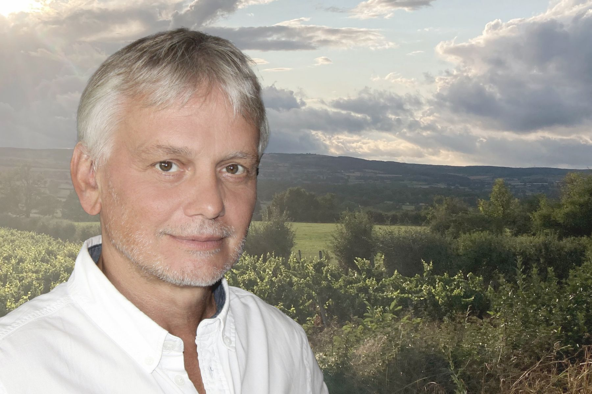
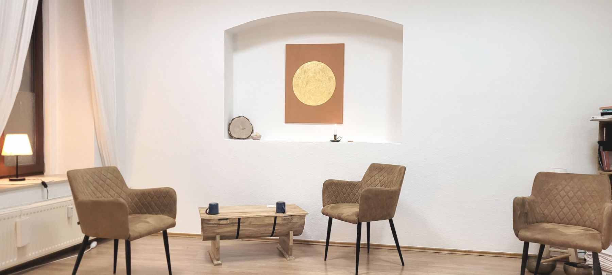

Gestalttherapeut und Heilpraktiker (Psychotherapie)
Was ist, darf sein. Was sein kann, darf sich verändern.
Gestalttherapie in Leipzig, für Einzelne, Paare und Gruppen.

Gerade ist alles zu viel? Wie soll es weitergehen?
Oftmals fühlt sich Leid wie eine Sackgasse oder Erstarrung an. Manchmal ist das alles ganz schön viel.
Ich höre zu und unterstütze Sie, Ihren ganz persönlichen Weg zu suchen und zu finden. Dabei lernen Sie sich selbst besser kennen und erkennen Sackgassen und Erstarrungen.
Heilung braucht wirkliche Begegnung auf Augenhöhe. Die möchte ich Ihnen gern anbieten.
Angebote
- Einzeltherapie & CoachingWenn Sie feststecken oder vor einer Entscheidung stehen.→
- Paare & FamilienStreit? Sprachlosigkeit? Probleme mit den Kindern?→
- Gruppen & StilleSelbsterfahrungsgruppe, Gruppenwochenenden, geistliche Begleitung.→
- Supervision & LehrtherapieFür Kolleginnen, Kollegen und Menschen in der Gestalt-Weiterbildung.→
„Ohne Bewusstheit gibt es keine Kenntnis einer Wahlmöglichkeit.“
Das erste Gespräch
Rufen Sie mich an, schreiben Sie mir oder buchen Sie online einen Termin. Im ersten Gespräch klären wir Ihre Fragen und schauen, ob die Zusammenarbeit passt. Es kostet nichts und verpflichtet zu nichts.
Kosten
Eine Sitzung von Dauer ergänzen kostet Betrag ergänzen. Die gesetzlichen Krankenkassen übernehmen die Kosten in der Regel nicht. Manche private Krankenversicherungen und Zusatzversicherungen erstatten einen Teil; fragen Sie am besten vorher dort nach.
Nächste Termine
-
15. bis 17. Januar 2027Freitag bis SonntagDetails
Was heilsam ist
Gruppenwochenende im Bildungshaus Sausedlitz. Nur noch wenige Plätze frei.
-
Donnerstagsalle zwei Wochen, 16:30 bis 18:30 UhrDetails
Selbsterfahrungsgruppe
Die Gruppe sucht neue Leute. In der Praxis, 180 € im Quartal.
-
Einmal im MonatNächster Termin: DatumDetails
Offener Supervisions- und Intervisionsabend
Für Kolleginnen und Kollegen. Bitte unbedingt anmelden.
Die Praxis



Adresse
Querstraße 29
04103 Leipzig
Auf der Karte ansehen
Anfahrt
Wenige Minuten zu Fuß vom Hauptbahnhof.
Etage, Klingel